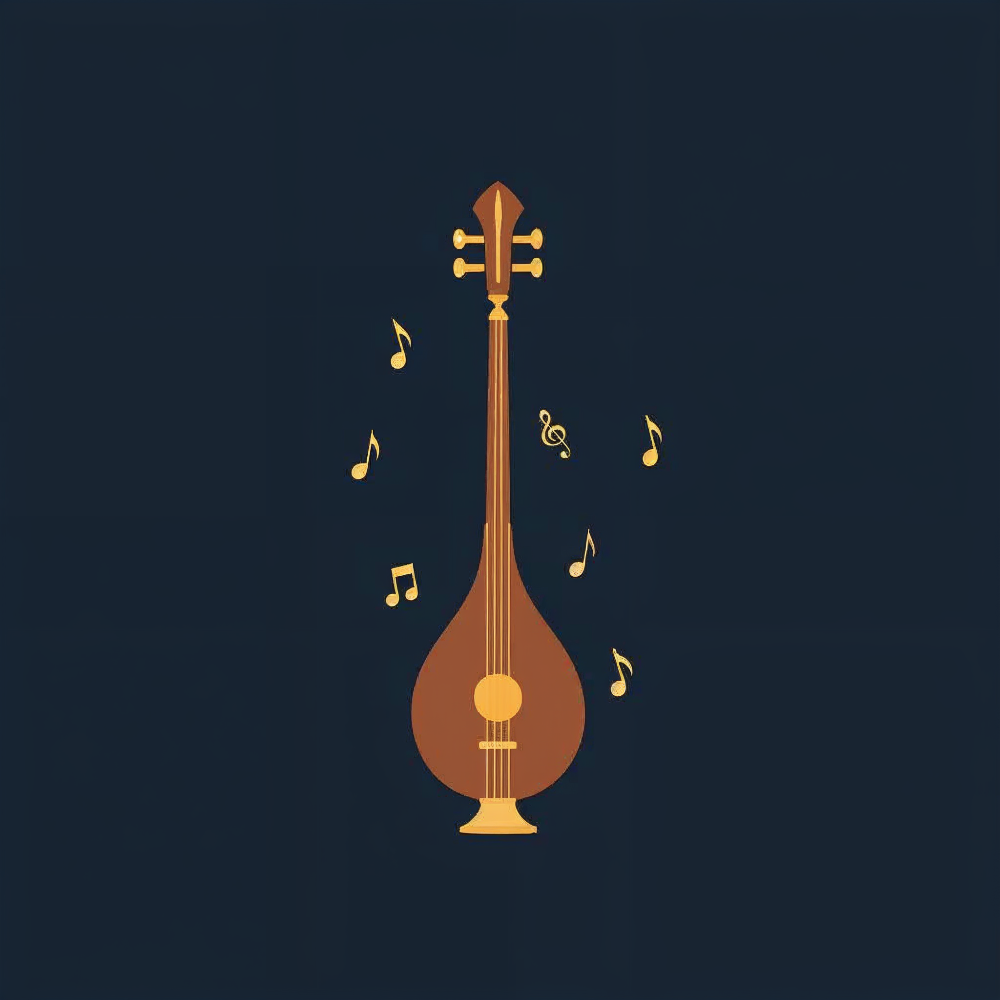
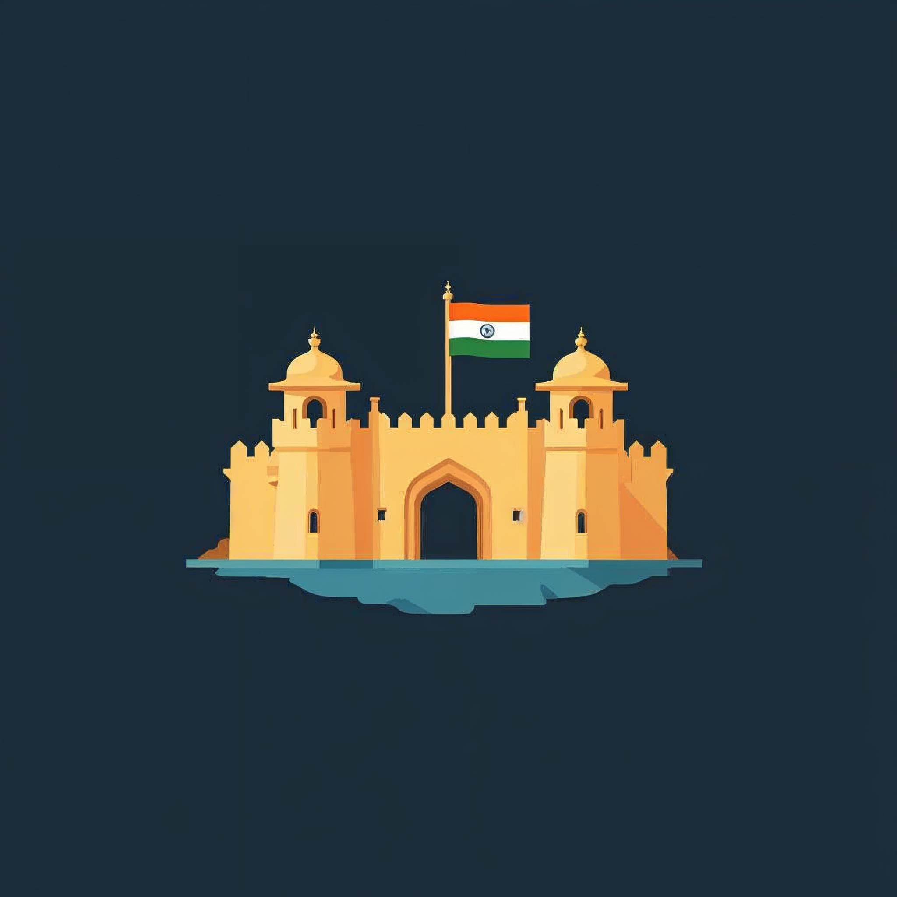
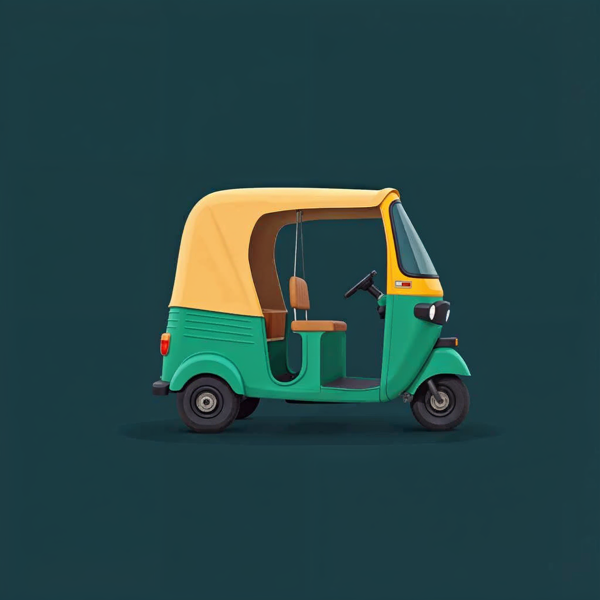
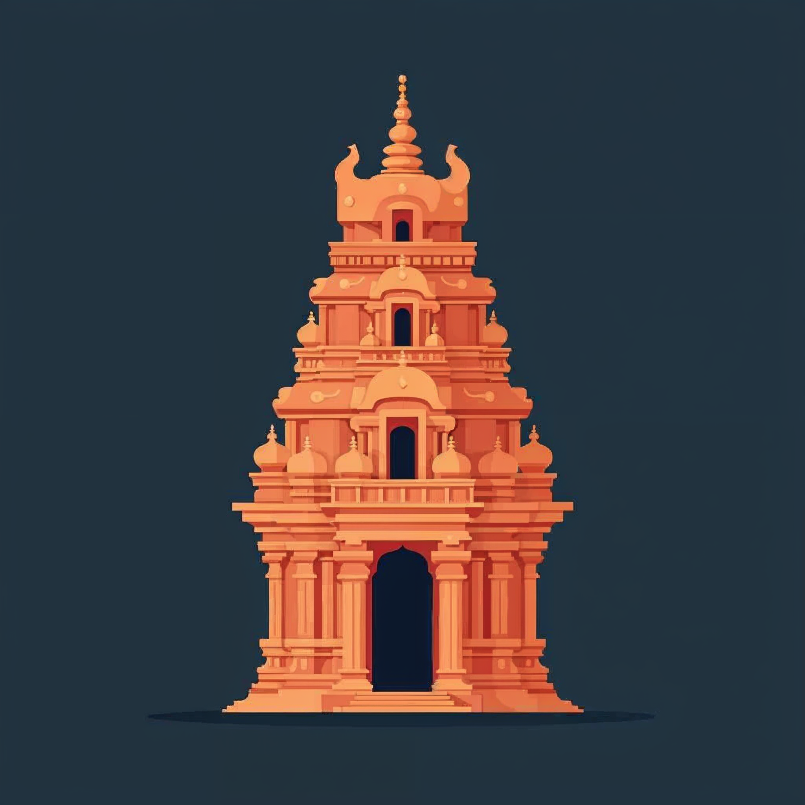

3
Interactive Screens
A wall that welcomes, speaks, and remembers — a large-format touch-and-voice experience celebrating Chennai culture and our two decades of craft.
The Wongdoody Chennai Interactive Wall is a touch-and-voice installation for the studio's reception. It greets visitors by name, tells the story of the city through sixteen curated topics, and opens a conversation about our work — an always-on stage for Chennai culture and Wongdoody craft.
Touch, voice, and live AI — stitched into a single surface.
Visitor approaches. Wall personalises with a name, Tamil greeting, and a living Chennai backdrop.
Floating bubbles of Chennai culture rotate every few minutes. Tap any to open three rich facts.
Say "Hey Doody" and the mic opens. Ask anything about Wongdoody, our projects, or the city.
Dashboard unfolds the Wongdoody timeline and sixteen case studies across industries.




Name picks up from ?client=… · sixteen stories rotate in tens · bilingual by default.
A curated atlas of the city — history, culture, and living tradition.
A wake word, an intent router, and a little memory — that's the whole trick.
Wake-word handled locally — no cloud streaming of the reception room.
Regex + LLM classifier decides: chit-chat vs. case-study lookup vs. deeper story.
Session state remembers what the guest just asked — follow-ups feel natural.
A sketchy, paper-textured timeline from the founding year to today's AI partnerships.
Tap any bubble to open the full story — challenge, solution, and measured impact. A constellation of sectors, each with its own signature project.
Architecture, components, UX logic. The main co-pilot through every iteration of the build.
The second set of eyes. Pushed every flow, checked the edge cases, wrote the regression prompts.
Voice prompts, image generation references, and occasional language alternatives.
Source of truth. Every iteration pinned, every branch a preview. The build's memory.
Edge deploys, preview URLs per branch, zero-config handoff to the wall kiosk.
Research, references, image samples — the sanity check on every cultural claim.
Pinterest, Google, YouTube — Tamil Nadu, lights, mandala, Kolam.
Brand mark, Tamil greeting, guest-name hook from the URL.
Sixteen stories × three facts. Data shape + rotation logic.
Paper-texture, wobbly lines, doodle stars and squiggles.
Bubble cluster for case studies, concentric rings, project glyphs.
Wake word + intent routing + captions + graceful fallbacks.
Framer transitions, soft float, ink-stroke reveals, typography rhythm.
ChatGPT's test pass, fixes, Vercel build, onto the wall.
String lights, mandala motifs, Tamil typography, festival palettes.
Cultural context for every Chennai topic, historical dates, icon references.
Interactive wall demos, festival footage, live-kiosk reference tapes.
A second AI reviewing every iteration — catching the edge cases a human eye drifts past.
Tamil & English contrast, alt-text on every icon, visible focus.
Wake word, interrupt handling, silent fallback copy when mic blocked.
Bubbles above 140px, dismiss-on-outside for cards, multi-touch safe.
Sixty frames on the wall kiosk · prefers-reduced-motion honoured.
Ten of sixteen topics per pass — no repeats until a full cycle.
API fail → graceful offline cards. Never a blank screen.
Say hello to the wall. It'll remember your name, your language, and the question you forgot to ask.